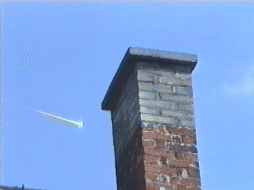

Dans le comté de Saint Clair (Illinois), des officiers de police
de 5 communes voisines rapportent tous indépendamment avoir vu un énorme appareil avec une multitude de lumières
brillantes se déplaçant silencieusement dans le ciel à très basse altitude.
Au-dessus des Yvelines, Ile-de-France le pilote d'un avion
à destination de Casablanca observe à faible distance sous son appareil 2 ballons, un bleu et un blanc supportant
une charge ressemblant à un réflecteur radar Suite à une réclamation Météo-France a indiqué qu'il ne s'agissait pas de radiosondages météo. L'enquête auprès des militaires n'a donné aucune information nouvelle. Si la nature des objets (ballons) ne semblent pas faire de doute, l'origine de ces ballons n'a pu être déterminéeSEPRA: PAN
classé B.
A Sezanne-Epernay, Marne, 1 homme au volant de sa voiture
est soudain totalement ébloui par une lumière de très forte intensité qui s'infiltre dans la voiture par le toit
ouvrant. Le moteur et l'autoradio s'arrêtent. Au bout de quelques instants, le phénomène se dissipe, l'autoradio se
remet à fonctionner et le témoin peut redémarrer sa voiture pour rentrer chez lui, terrorisé L'enquête trouvera un autre témoin dont la voiture s'est brièvement arrêtée le alors que le témoin était aveuglé par un flash. L'enquête n'a pas permis de trouver une explication, EDF a notammé indiqué qu'aucune perturbation de la ligne électrique le long de la route n'a été constatée. Par ailleurs à l'endroit de l'observation, l'éclairage public est inexistantSEPRA: PAN
classé D.
On retrouve l'avion disparu dans les Andes le dans le volcan Tupungato, une zone très
éloignée de la trajectoire normalement empruntée par l'avion à l'époque All
about canoes, 2000-02-23.
A Saint André de Cubzac, Gironde, 1 témoin
circulant en voiture observe 1 phénomène lumineux se déplaçant lentement pour s'immobiliser au-dessus d'un bois. Le
phénomène est silencieux, et se situe d'après le témoin à environ une distance de 200 m et 150 m d'altitude.
L'observation dure environ
SEPRA: PAN
classé C.
A Dol-de-Bretagne, Ille-et-Vilaine, 1 témoin en route pour
son travail observe soudain à 30 m du sol environ 1 objet allongé ayant la forme d'un réacteur d'avion entouré de
sorte de flammes jaunes et suivi d'une très importante traînée jaune non éblouissante. L'objet se déplace lentement
sur une trajectoire horizontale, sans aucun bruit. Le témoin arrête sa voiture et en descend mais le phénomène a
déjà disparu, il ne l'a aperçu en fait que le temps de le voir passer devant sa voiture Lors de l'enquête, aucun trafic aérien n'a été identifié ni aucune perturbation sur les lignes électriques prochesSEPRA: Cas
de type D.
À Colinton, Ecosse, signalement d'un phénomène ovale brillant
avec une queue comme cerf-volant, se déplaçant rapidement vers l'ouest avant de plonger et disparaître
Mather, Adrian & Jacobs, Bill: "Lothian
X-Files revealed", Scotsman.com News, 2 août 2007.
A Challans, Vendée, un couple proche de leur maison observe
2 fois à 10 mn d'intervalle le passage d'une forme ronde de couleur blanc jaune se déplaçant à 15 ou 20 m de
hauteur. En fin de trajectoire, un petit bruit se fait entendre avec une lumière verte. Aucun bruit n'est détecté.
Le phénomène observé peut faire penser à un phare tournant mais les informations disponibles ne permettent pas une
analyse sérieuse
SEPRA: PAN
classé C.
Bill Joy publie un article sur le danger des technologies dans le futur
Joy, Bill: "Why the future
doesn't need us", Wired, avril 2000.
 Le
bolide qui s'écrasera à Morávka le
6 mai
Des milliers de personnes observent de la Pologne méridionale à la Moravie un
bolide extrêmement lumineux. C'est un événement énorme, au maximum l'éclat étant comparable au soleil. Juste après
le bolide, l'impact du météore est observé dans le jardin d'un petit village silésien, Morávka et un petit morceau
est immédiatement trouvé.
À Vincennes, Val-de-Marne, un témoin observe le passage
d'un objet sombre se déplaçant à vive allure. Aucun bruit n'a été détecté, l'altitude a été estimée par le témoin à
300 m et la distance d'observation à 500 m
SEPRA: PAN
classé C.
Alignement des planètes du système solaire, la Terre
et Pluton se situant d'un côté du Soleil, et les autres grandes planètes
(Venus,
Mars, Saturne,
Jupiter, Uranus, Neptune) étant disposées en ligne
droite de l'autre côté.
A Toul, Meurthe-et-Moselle, plusieurs témoins observent le
passage d'objets avec des feux de différentes couleurs volant au-dessus des maisons. Les trajectoires sont
différentes suivant le point d'observation Bien que les témoins parlent de formes de soucoupes volantes, il est probable que ces observations soient celles de Mirage
2000, en manoeuvre sur la région jusqu'à SEPRA: PAN classé
B.
A Saint Afrique, Aveyron, un homme et son fils en train
d'observer le ciel remarquent soudain, et à l'oeil nu, 5 lumières clignotantes. Les trajectoires de ces lumières
sont courtes, certaines font demi-tour avant de disparaître. Un des témoins parvient à obtenir un cliché de ce
phénomène
SEPRA: PAN
classé D.
A Montcornet, Gironde, plusieurs témoins d'une même
famille observent de grands cercles lumineux dans le ciel tournant comme une toupie L'enquête montrera qu'il s'agit de l'effet lumineux d'un jeu de lumière d'une discothèque se reflétant sur un nuageSEPRA: PAN
classé A.
Au Havre, Seine Maritime, 1 témoin de chez lui
observe durant 4 ou 5 s le passage très rapide et silencieux d'une masse lumineuse verte qui disparaît en se
séparant en 2
SEPRA: PAN
classé C.
A Saint Giers-sur-Gironde, Gironde, plusieurs témoins
observent durant quelques secondes le passage de 1 boule lumineuse qui s'éteint progressivement
Le phénomène observé est probablement une rentrée atmosphérique, naturelle ou artificielleSEPRA: PAN
classé B.
A Angerville, Essonne, 1 témoin observe 1 point lumineux
très brillant plus gros qu'une étoile. Ce point se déplace très lentement et accélère soudain pour disparaître en
SEPRA:
PAN classé C.
A Great Yarmouth, Norfolk, Angleterre, pluie de
poissons.
A Lille, Nord, 1 homme au volant
de sa voiture observe 1 objet volant à basse altitude d'au moins 50 m de diamétre. Cet objet a la forme d'un grand
cercle constitué de carrés lumineux. Le témoin suit cet objet sur environ 8 km puis, celui-ci disparaît. Plus loin
lorsî'arrête, le témoin observe sur son capot 1 point rouge qui s'agite en tout sens. Relevant la tête, il
constate à nouveau à en viron 300 m de hauteur le même phénomène stationnaire au-dessus de sa voiture. Au bout de
quelques s, le phénomène disparaît ainsi que le point roîan class="source">SEPRA:
PAN classé D.
A Mallemort, Bouches-du-Rhône, 2 témoins différents
observent la chute simultanée de 2 boules lumineuses incandescentes avec une traînée blanche importante. Aucun
bruit n'est détecté et les objets disparaissent en quelques s. Il s'agit probablement de l'observation d'une
rentrée atmosphérique
SEPRA: PAN
classé B.
A Breteuil, Oise, 1 témoin rentrant de son travail
observe pendant à la jumelle 1 objet lumineux avec une série de couleurs. L'objet se déplace
rapidement avec des mouvements erratiques sans faire de bruit. L'objet disparaît avec le lever du jour
Aucune autre information n'a été recueillie sur cette observation qui est vraisemblablement celle d'un astreSEPRA: PAN
classé B.
A 80 km de Rambouillet, Yvelines (RBT radial 156°), le
pilote et le copilote d'un vol à destination de Grenoble en phase de montée observent le passage très rapide
(quelques 10èmes de s) d'un objet rond à quelques m au dessus du cockpit. L'équipage a craint une
collision de l'objet avec l'empennage arrière. Aucun ballon n'a pu être identifié. L'hypothèse d'un gros oiseau
(oie) a également été évoquée mais l'enquête n'a pas permis d'identifier cette observation qui a mis en jeu la
sécurité du vol
SEPRA: PAN
classé D.
A Belfast, Royaume Uni, observation de 2 phénomènes en
forme d'œuf avec des lumières rouges, bleues et vertes, un dôme au sommet, plat à la base, émettant une lumière
blanche aveuglante
Lister, Sam: "Ulster's
X-files: dossier of UFO sightings released", Belfast Telegraph, jeudi 2 août 2007.
Au-dessus de la Côte d'Or, Bourgogne, les équipages de
2 avions de ligne à destination et au départ de Paris observent un phénomène lumineux de couleur verte avec une
traînée couleur feu en trajectoire descendante correspondant au passage d'une météoriteSEPRA: PAN
classé A.
A Cahors, Lot, 1 témoin observe 1 engin en forme de disque avec
3 pieds. Cet engin vole rapidement à basse altitude sans faire de bruit. Une observation similaire est faite par 1
gendarme qui signale un bruit de moteur. L'enquête menée par la gendarmerie montrera qu'il s'agit du test d'un
prototype d'ULM pour filmer les oiseaux et destiné au tournage du film Le Peuple migrateurSEPRA: PAN
classé A.